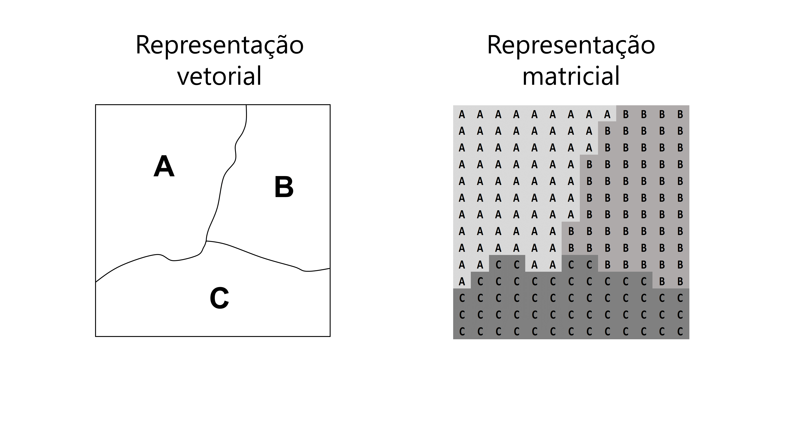

library(ggplot2)
library(tidyverse)8 Visualização de dados com ggplot2
8.1 Introdução e pré-requisitos
Esse é o primeiro capítulo em que vamos introduzir o pacote ggplot2, ou simplesmente ggplot. O ggplot é um pacote voltado para a visualização de dados, ou em outras palavras, para a construção de gráficos. Para que você possa acompanhar os exemplos dessa seção, você precisa ter o pacote instalado em sua máquina. Após instalá-lo, você pode tanto chamar diretamente pelo pacote ggplot2, quanto pelo tidyverse, que também o inclui, através da função library().
8.2 O que é o ggplot e a sua gramática
A linguagem R é conhecida por sua capacidade gráfica, e MURRELL (2006) oferece ótimos exemplos que atestam essa afirmação. Mesmo que a linguagem R ofereça “já de fábrica”, o pacote lattice, que já é capaz de muita coisa, o ggplot é sem dúvidas, o pacote mais popular da linguagem no que tange a criação de gráficos, pois ele oferece algo que os outros pacotes não tem, que é a sua flexibilidade1.
Flexibilidade é uma das principais características (e a principal vantagem) do ggplot, e é o que amplia a sua utilização para além dos gráficos sérios e frios de um jornal científico, permitindo ao usuário criar gráficos vistosos, e um tanto peculiares. Veja por exemplo, a arte criada por Thomas Lin Pedersen, mostrada na Figura 8.1. O que lhe dá essa liberdade dentro do ggplot, é a sua gramática.
O pacote ggplot (ou seu nome oficial - ggplot2) foi inicialmente desenvolvido por WICKHAM (2016), e lançado pela primeira vez no ano de 2005. O pacote representa uma implementação da teoria desenvolvida por WILKINSON (2005), chamada de The Grammar of Graphics (ou “a gramática dos gráficos”). Portanto, o ggplot busca abstrair os principais conceitos da teoria de WILKINSON (2005), e implementá-los dentro da linguagem R.
Segundo a teoria de WILKINSON (2005), todo e qualquer gráfico estatístico, pode ser descrito por um conjunto de camadas, ou componentes, que estão apresentados na Figura 8.2. Dessa forma, na visão de WILKINSON (2005) todos os tipos de gráfico que conhecemos (pizza, barras, dispersão, boxplot, etc.) fazem parte de um mesmo grupo, e a característica que os tornam diferentes entre si, se encontra na forma como as camadas abaixo estão definidas em cada gráfico.

Tendo isso em mente, um gráfico do ggplot é composto por várias camadas, que em conjunto formam o gráfico desejado. A ideia por trás do pacote, portanto, é utilizar uma gramática para descrever de forma concisa, cada uma das camadas apresentadas na Figura 8.2. Após definirmos essas camadas, nós podemos somá-las para construirmos o nosso gráfico final. Em outras palavras, você vai adicionando aos poucos, novas camadas ao gráfico, onde cada uma dessas camadas fica responsável por definir um componente específico do gráfico (escalas, formas geométricas, legendas, facetas, anotações, …). Caso seja de seu desejo, você pode deixar o próprio ggplot responsável por definir várias das camadas apresentadas na Figura 8.2. Porém, em todo gráfico do ggplot, você deve obrigatoriamente definir as três camadas (em negrito na Figura 8.2) apresentadas a seguir, sendo portanto, as camadas essenciais que formam a base de todo gráfico do ggplot.
Dados: os dados que o gráfico deve expor.
Mapeamento estético (aesthetic mapping): uma descrição de como as variáveis dispostas em seus dados devem ser mapeadas para elementos visuais (ou estéticos) de seu gráfico.
Geometrias: são as formas geométricas do gráfico que representam os seus dados, ou seja, em um gráfico de dispersão, seus dados são representados no gráfico por pontos, enquanto em um gráfico de barras, seus dados são representados por retângulos.
A gramática do ggplot, representa, portanto, as regras que definem o emprego das funções necessárias, e de seus possíveis parâmetros para acessarmos e controlarmos cada uma das camadas mostradas na Figura 8.2. Logo, cada uma dessas camadas, são controladas por uma função (ou por um conjunto de funções) diferente, que lhe permite o uso de diferentes mecanismos e valores em sua definição.
8.3 Iniciando um gráfico do ggplot
8.3.1 Dados
Primeiro, vamos definir os dados que vamos utilizar em nossos gráficos. A tabela datasus, contém a contagem de mortes por homicídios dolosos em 2018 no Brasil, coletados a partir dos microdados do SIM/DATASUS. Nessa mesma tabela, temos a distribuição dessas mortes, por sexo, por faixa etária, pelo estado (Unidade da Federação - UF) em que as mortes ocorreram, e pela cor de pele dos indivíduos.
library(readr)
github <- "https://raw.githubusercontent.com/pedropark99/"
pasta <- "Curso-R/master/Dados/"
arquivo <- "datasus.csv"
datasus <- read_csv2(paste0(github, pasta, arquivo))
datasus# A tibble: 1,836 × 6
`Faixa etaria` Genero Cor `Nome UF` UF Contagem
<chr> <chr> <chr> <chr> <chr> <dbl>
1 10 a 14 Feminino Parda Acre AC 4
2 10 a 14 Masculino Parda Acre AC 4
3 15 a 19 Feminino Branca Acre AC 2
4 15 a 19 Feminino Parda Acre AC 4
5 15 a 19 Masculino Branca Acre AC 6
# ℹ 1,831 more rowsVamos começar a montar o nosso gráfico. Você sempre inicia um gráfico de ggplot, pela função base do pacote - ggplot(). Essa função é responsável por criar o objeto base para o gráfico, e nela, possuímos dois argumentos que compõe duas das três camadas essenciais (que definimos na Figura 8.2) desse gráfico, e que podem ou não ser fornecidos nessa função. Esses dois argumentos são: data, que é o nome da tabela onde estão os dados que serão utilizados no gráfico; e mapping, que é o aesthetic mapping, ou o mapeamento de variáveis de sua tabela, para componentes estéticos do gráfico. Ou seja, você não precisa necessariamente fornecer esses argumentos já na função ggplot(), pois você pode defini-los dentro das funções que formam as figuras geométricas (as funções geom). O importante, é que você sempre deve começar um gráfico ggplot, com a função ggplot().
Mas então, qual é a diferença entre eu fornecer esses argumentos na função ggplot() ou dentro das funções geom? Pense em um exemplo, no qual você busca mostrar em um mesmo gráfico, duas informações diferentes. Você pode utilizar dois geom’s (ou formas geométricas) diferentes para mostrar e diferenciar essas duas informações no gráfico. Por exemplo, podemos ter um gráfico que contenha barras mostrando a evolução da dívida pública, e linhas mostrando a evolução do salário médio no país.
Caso você forneça os dois argumentos (data e mapping) na função ggplot(), você está dizendo ao programa, que ele deve utilizar a mesma base de dados, e o mesmo aesthetic mapping, em todos os formatos geométricos (geom) do gráfico. Enquanto, ao fornecer esses argumentos dentro de cada função geom, você estaria dizendo ao programa que utilize essa base de dados, e esse aesthetic mapping, apenas naquele formato geométrico (ou geom) especificamente. Tendo isso em mente, não conseguiríamos montar o gráfico descrito no parágrafo anterior, ao dar os argumentos já na função ggplot(). Pois o gráfico mostra duas informações diferentes (salário médio e dívida pública), ao longo dos geom’s do gráfico. Ou seja, os dois formatos geométricos dispostos no gráfico, utilizam dois aesthetic mapping diferentes. Quando chegarmos à seção 8.4 vou explicar isso em mais detalhes.
No nosso caso, os dados que vamos utilizar, estão na tabela datasus, por isso forneço ao argumento data o nome dessa tabela. Ao rodar o código logo abaixo, você vai perceber que ele gera apenas um quadro cinza vazio. Isso ocorre porque definimos apenas uma das camadas essenciais para compor o gráfico, que são os dados utilizados. Temos que definir as outras duas, para completarmos a base de um gráfico, por isso, vamos passar agora para o aesthetic mapping.
ggplot(data = datasus)8.3.2 Mapeamento de variáveis (Aesthetic Mapping)
O aesthetic mapping representa o mapeamento, ou a conexão de variáveis em sua tabela (ou sua base de dados), com os componentes estéticos e visuais do gráfico. Nós controlamos esse mapeamento através da função aes(). Há diversos desses componentes visuais que compõe um gráfico, e os primeiros que vêm a sua mente, são provavelmente as cores e as formas geométricas. Mas também os próprios eixos, ou melhor dizendo, as escalas utilizadas nos eixos, são componentes visuais do gráfico. Pois essas escalas definem como as formas geométricas vão se posicionar dentro do espaço do gráfico.
Pense por exemplo, no globo terrestre. Você pode representar esse globo dentro do ggplot, mas para que os formatos sejam corretamente posicionados em um “globo”, você precisa usar uma escala e um sistema de coordenadas diferentes do plano cartesiano. Um outro exemplo, seria o gráfico de pizza. Ao pesquisar sobre, você irá perceber que um gráfico de pizza no ggplot, é feito a partir do formato geométrico de barras (geom_bar()). Ou seja, um gráfico de barras, é o ponto de partida para gerar um gráfico de pizza no ggplot, e o que diferencia esses dois gráficos, é a escala usada. Em um gráfico de pizza, utilizamos uma coordenada circular, chamada de coordenada polar, ao invés do plano cartesiano.
Agora, vamos continuar montando nosso gráfico. Primeiro, vamos tentar montar um gráfico de barras, que mostre a distribuição do total de mortes ao longo das faixas etárias no país, baseado nos dados apresentados na tabela datasus. Tendo isso em mente, o número de mortes, deve ficar no eixo y de nosso gráfico, enquanto os grupos (faixas etárias), devem ficar no eixo x.
Essa é a base do nosso mapeamento de variáveis. Estamos definindo que o número de mortes deve ficar no eixo y, e as faixas etárias no eixo x, e nós fornecemos essa descrição ao ggplot, dentro da função aes() (abreviação para aesthetic mapping). No exemplo abaixo, temos dois gráficos. No gráfico da esquerda você pode perceber que um plano cartesiano foi montado, onde temos uma escala para a faixa etária no eixo x, e outra escala para o total de mortes no eixo y. Porém, esse plano cartesiano continua vazio, pois ainda não definimos a última camada essencial do gráfico, que é a forma geométrica que deve representar os nossos dados.
# Gráfico esquerdo, com o aesthetic mapping:
ggplot(
data = datasus,
mapping = aes(x = `Faixa etaria`, y = Contagem)
)
# Gráfico direito, agora também com o geom:
ggplot(
data = datasus,
mapping = aes(x = `Faixa etaria`, weight = Contagem)
) + geom_bar()

Portanto, no gráfico da direita estamos adicionando este último componente para formarmos a base completa do nosso gráfico. Perceba que nesse gráfico, usamos a nossa primeira função geom. Cada função geom, se refere a um formato geométrico diferente. No nosso caso, queremos um gráfico de barras, que é formado pela função geom_bar(). O padrão dessa função (ou formato geométrico) no ggplot, é calcular uma contagem dos dados. Em outras palavras, o gráfico de barras no ggplot, se comporta inicialmente (por padrão) como um histograma. Ao invés de calcular a soma total de certa variável, ele irá contar, quantas vezes cada valor ocorre naquela variável dentro da base de dados.
Entretanto, não queremos uma contagem dos dados, pois a coluna Contagem já representa uma contagem em si. O que queremos é a soma total dessa contagem em cada faixa etária. Por isso, ao invés de fornecer Contagem ao argumento y de aes(), eu forneço essa coluna para o argumento weight, no código que produz o gráfico à direita no exemplo acima.
Além disso, você talvez tenha percebido o operador de soma + nessa parte do código. O operador de soma é muito importante para o ggplot! Pois é ele que interliga as várias camadas que compõe o seu gráfico. Portanto, todas as funções que adicionarmos às várias camadas do nosso gráfico no ggplot, devem ser conectadas por um sinal de +, por isso lembre-se de colocar esse sinal sempre que adicionar uma nova função ao seu gráfico.
Agora que definimos as três camadas essenciais (dados, aesthethic mapping e geom), temos enfim, no gráfico à direita mostrado no exemplo acima, o nosso primeiro gráfico completo montado. Há várias coisas que poderíamos fazer a partir daqui. Podemos por exemplo, colorir as barras de acordo com a participação do sexo no número de mortes. Ou seja, essas cores irão representar em cada barra, o número de mortes que correspondem ao sexo masculino e ao sexo feminino. Por padrão, o geom_bar() empilha esses agrupamentos um em cima do outro. Dessa forma, essas cores não apenas nos apresenta o número de mortes em cada sexo, mas indiretamente, elas também nos mostram o quanto que aquele grupo representa (qual a sua porcentagem) do total de mortes naquela faixa etária.
Desta maneira, estamos definindo um outro componente visual do gráfico (cores das barras) à uma outra variável de nossos dados (coluna Genero). Logo, estamos falando novamente do aesthethic mapping do gráfico, e por isso, devemos definir essa ligação dentro da função aes(). Há duas formas de você colorir formas geométricas no ggplot, que dependem da forma geométrica e do resultado que você quer atingir. Uma barra (ou retângulo), é tratada como uma forma geométrica de área, enquanto outras formas (como pontos e linhas) são tratadas de uma maneira diferente. Nesses formatos de área, você deve utilizar o argumento fill, para preencher o interior deste formato de uma cor.
Perceba no gráfico da esquerda mostrado no exemplo abaixo, que conseguimos colorir as barras, e que também, uma parte muito pequena das mortes correspondem ao sexo feminino, em todas as faixas etárias. Agora, e se mudássemos a variável no eixo x, por exemplo, para a cor de pele (gráfico à direita). Perceba, que o restante do aesthetic mapping continua o mesmo, e portanto, o gráfico mantém essas outras “conexões” enquanto modificamos a variável ligada ao eixo x.
# Colorindo as barras de acordo com o sexo:
ggplot(
data = datasus,
mapping = aes(
x = `Faixa etaria`,
weight = Contagem,
fill = Genero
)
) + geom_bar()
# Com uma variável diferente no eixo x:
ggplot(
data = datasus,
mapping = aes(
x = Cor,
weight = Contagem,
fill = Genero
)
) + geom_bar()

Como disse anteriormente, há outros componentes visuais que você pode ligar às variáveis de sua tabela de dados. Você pode por exemplo, em alguns geom’s, conectar o formato desse geom a uma variável. Temos um exemplo dessa estratégia na seção 8.4.
8.3.3 Formatos geométricos - funções geom
Cada função geom utiliza um formato geométrico e um método de desenho diferentes para representar os seus dados. No ggplot há vários geom’s distintos que você pode utilizar. Abaixo estou listando os geom’s mais comuns, mas basta consultar a cola oficial do ggplot22, ou o site oficial de referências do pacote3, que você ficará um pouco perdido com tantas opções. Um excelente repositório, com ótimos exemplos de gráficos dos quais você pode tirar inspirações de como e onde utilizar cada geom, é o R Graph Gallery4.
geom_bar(): desenha um gráfico de barras.geom_point(): desenha um gráfico de pontos (ou um gráfico de dispersão).geom_line(): desenha um gráfico de linha.geom_boxplot(): desenha um gráfico de boxplot.geom_histogram(): desenha um histograma.geom_sf(): desenha um mapa (geompara dados espaciais).geom_smooth(): desenha uma linha de média condicional (muito utilizado para desenhar linhas que representam modelos de regressão linear e de outros modelos econométricos).geom_text(): utilizado para inserir texto.geom_label(): utilizado para inserir rótulos, ou basicamente, textos envoltos por uma caixa.
Por exemplo, um gráfico de barras, é geralmente utilizado para apresentar estatísticas descritivas dos nossos dados. Ou seja, esse tipo de gráfico (por padrão) tenta resumir características dos seus dados em poucos números (médias, totais, contagens). Já um gráfico de dispersão (por padrão) nos apresenta diretamente os dados, de forma crua no plano cartesiano. Isto é, diferentes geom’s vão tratar (e principalmente, representar) os seus dados de formas distintas.
Vamos por exemplo, adicionar pontos ao nosso gráfico anterior, com o geom_point(). Você pode ver o resultado no gráfico à esquerda no exemplo abaixo. Para facilitar a visualização, eu limitei os valores do eixo y no gráfico (para o intervalo de 0 a 1500) por meio da função lims(). Dessa forma, estamos dando um zoom em uma área específica do gráfico. Repare que cada ponto representa uma das observações encontradas na nossa base, e que vários deles estão se sobrepondo.
# Gráfico à esquerda
ggplot(
data = datasus,
mapping = aes(
x = Cor,
weight = Contagem,
fill = Genero
)
) +
geom_bar() +
geom_point(aes(y = Contagem)) +
lims(y = c(0,1500))
# Gráfico à direita
ggplot(
data = datasus,
mapping = aes(
x = Cor,
y = Contagem,
fill = Genero
)
) +
geom_point() +
geom_boxplot()

Ao substituirmos as barras por boxplot’s produzimos o gráfico à direita no exemplo acima, que além de mostrar todas observações da base com o geom_point(), ele também mostra como a distribuição de ambos os sexos se encaixam ao longo do alcance (ou range) desses dados. Se você abrir esse gráfico dentro do R, você vai perceber que nos indivíduos de cor parda, temos a maior contagem para o sexo feminino em toda a base, que atinge em torno de 175 mortes, enquanto para o sexo masculino, esses valores podem atingir mais de 1000 mortes, apesar de que ambos os valores são outliers em suas respectivas distribuições.
Uma outra forma de visualizarmos a diferença entre homens e mulheres nesses dados, seria utilizando geom’s de erro, como as linhas de alcance. Os geom’s de erro são muito úteis para visualizar medidas de variação ao longo dos grupos. O geom_ribbon() por exemplo, é utilizado em gráficos de séries temporais, para desenhar os intervalos de confiança ou desvios padrão ao redor da linha que representa a série. No nosso caso, iremos utilizar o geom_linerange(), para desenharmos a diferença média entre o número de mortes entre os dois gêneros.
O que o geom_linerange() faz é desenhar uma reta de um ponto A a um ponto B. A ideia por traz desse geom é desenharmos um linha que representa (pelo seu comprimento), por exemplo, o desvio padrão de uma variável, ou no nosso caso, a diferença na média de vítimas de homicídios dolosos entre dois gêneros. Isto significa que temos dois novos componentes visuais que podemos controlar no gráfico através do aesthetic mapping, que são as coordenadas do ponto A e do ponto B. Esses componentes (pontos A e B) representam os “limites” (máximo e mínimo) dessa linha, por isso, são controlados pelos argumentos ymax e ymin dentro da função aes(). Há outros geom’s que podem ser controlados por esses argumentos, porém, os que vimos anteriormente (geom_point() e geom_bar()) não possuem esses argumentos.
Primeiro, precisamos calcular o número médio de mortes de cada gênero e em cada cor de pele, e em seguida, modificar a estrutura da tabela, para que possamos mapear os limites (ymin e ymax) do linerange de acordo com o sexo. Para isso utilizo as funções dos pacotes dplyr e tidyr que vimos anteriormente. Perceba também que eu inverti o plano cartesiano, utilizando a função coord_flip().
datasus_agrup <- datasus %>%
group_by(Cor, Genero) %>%
summarise(Media = mean(Contagem)) %>%
pivot_wider(
id_cols = "Cor",
names_from = "Genero",
values_from = "Media"
)
ggplot(
data = datasus_agrup,
aes(x = Cor)
) +
geom_linerange(aes(ymax = Masculino, ymin = Feminino)) +
geom_point(aes(y = Feminino, color = "Feminino")) +
geom_point(aes(y = Masculino, color = "Masculino")) +
coord_flip()
Agora, muitas coisas estão ocorrendo neste gráfico. Primeiro, o geom_linerange() constrói uma linha para cada cor de pele, que vai da média de mortes no sexo feminino até a média no sexo masculino. Segundo, dois geom_point() são utilizados, onde cada um deles fica responsável por um dos sexos, e desenha um único ponto para cada cor de pele que indica a média de mortes para o sexo correspondente. Em seguida, eu uso coord_flip() para inverter o plano cartesiano. Ou seja, a variável que estava no eixo y (média de mortes) vai para o eixo x, e a variável que estava no eixo x (cor de pele) vai para o eixo y.
Certamente, esse gráfico dá um pouco mais de trabalho de construir. Porém, é uma forma mais simples de se mostrar essa diferença, e com isso, você consegue atingir um público maior. Pode ser que o seu leitor não saiba o que é um boxplot, e há motivos razoáveis para se acreditar nisso. No Brasil, o boxplot não é comumente tratado no ensino básico, e sim no ensino superior, e mais especificamente, em cursos que sejam da área de exatas, ou que possuam matérias de estatística na grade curricular. Nós sabemos também que o acesso da população brasileira ao ensino superior é restrito, sendo considerado um local de “elitismo”.
Por outro lado, os alunos em geral veem as principais medidas estatísticas de posição central (média, mediana e moda) já no ensino básico, e alguns chegam a revê-las no ensino superior. Logo, as chances de seu leitor compreender a mensagem que você quer passar: “em média, os homens são as principais vítimas de homicídios dolosos, entretanto, nas populações indígenas e de cor de pele amarela, esse padrão não parece ser significativo” são maiores. Essa consideração pode ter menor peso a depender de qual seja o público que você busca atingir. Se você está publicando um artigo científico em sua área, é bem provável que os potenciais leitores deste material conheçam um boxplot, e portanto, saibam interpretá-lo corretamente.
8.4 Uma outra forma de se compreender o aesthetic mapping
Nas seções anteriores, eu defini o aesthetic mapping, como a conexão entre as variáveis de sua tabela, com os componentes visuais de seu gráfico. Porém, temos uma outra forma útil de enxergarmos esse sistema. Podemos entender o aesthetic mapping, como um mecanismo para determinarmos quais componentes visuais vão variar, e quais vão permanecer constantes ao longo do gráfico. Ou seja, se você está definindo, por exemplo, as cores da forma geométrica (geom) que representa os seus dados, você pode utilizar o aesthetic mapping para definir se e como essas cores vão variar ao longo do gráfico.
Por exemplo, vamos voltar ao gráfico de barras que montamos na seção 8.3, que mostra o número total de mortes ao longo das diferentes cores de pele e gênero da base. Perceba no gráfico à esquerda no exemplo abaixo, que a cor está variando dentro de cada barra (e não entre cada uma delas), de acordo com a variável Genero. Nós podemos modificar a forma como essas cores variam dentro de cada barra, ao mudarmos a variável que define essa variação. Em outras palavras, podemos alterar o comportamento das cores, ao conectar esse componente em aes(), a uma outra variável de nossa tabela. O gráfico à direita é um exemplo disso, pois agora temos as UF’s conectadas ao argumento fill de aes(). Como resultado, temos uma variação muito maior de cores dentro de cada barra.
# Gráfico à esquerda
datasus %>%
ggplot() +
geom_bar(
aes(x = Cor, weight = Contagem, fill = Genero)
)
# Gráfico à direita
datasus %>%
ggplot() +
geom_bar(
aes(x = Cor, weight = Contagem, fill = UF)
)

Nós podemos ainda, atribuir a mesma variável alocada no eixo x para definir a variação dessas cores ao longo do gráfico. Dessa forma, temos um gráfico onde cada uma das barras terá a sua própria cor. Isso não é particularmente útil, mas talvez você deseja ter uma cor separada para cada barra, e caso você esteja com preguiça de pensar e definir quais cores serão essas, deixar essa tarefa nas mãos do próprio ggplot é uma solução e um atalho simples para atingir um bom resultado.
datasus %>%
ggplot() +
geom_bar(
aes(x = Cor, weight = Contagem, fill = Cor)
)
Portanto, ao conectarmos diferentes variáveis ao argumento fill em aes(), que define como as cores de cada barra são compostas, podemos modificar a forma como essas cores variam ao longo do gráfico. Mas e se nós quisermos manter uma única cor para essas barras, ou seja, e se é de seu desejo manter as cores constantes/fixas ao longo de todo o gráfico? Para isso, basta que você defina essas cores, fora de aes().
Em outras palavras, a função aes() trabalha com variáveis, ou atributos que tendem a variar ao longo de sua tabela. Quando você estiver trabalhando com valores constantes, ou com atributos que possuem um único valor possível ao longo de toda a sua base, a função aes() provavelmente não será o lugar ideal para trabalharmos com tais valores.
Por exemplo, o R possui diversas cores pré-programadas em seu sistema, e sempre que você quiser acessar essas cores ao longo do ggplot, você pode se referir a elas diretamente pelos seus nomes registrados. Caso queira uma lista com os nomes dessas cores pré-programadas, você pode utilizar a função colors(). Dentre essas diversas cores, temos uma chamada de steelblue. Logo, caso eu queira que todas as barras do meu gráfico estejam coloridas de acordo com essa cor, eu preciso fornecer o nome dessa cor ao argumento fill, porém, do lado de fora da função aes(). O gráfico à esquerda no exemplo abaixo demonstra essa ideia.
Portanto, você pode aplicar essa metodologia para qualquer outro componente visual de seu gráfico que você quiser definir. Ou seja, se você deseja manter um componente visual de seu gráfico constante/fixo ao longo de seu gráfico, você precisa apenas definir o argumento correspondente (fill, color, size, fontface, linetype, shape, etc.) do lado de fora de aes(). Por outro lado, caso você queira controlar a forma como esse componente visual varia ao longo do gráfico, você precisa definir o argumento correspondente dentro de aes().
# Gráfico à esquerda
datasus %>%
ggplot() +
geom_bar(
aes(x = Cor, weight = Contagem),
fill = "steelblue"
)
# Gráfico à direita
datasus %>%
ggplot() +
geom_bar(
aes(x = Cor, weight = Contagem, fill = "steelblue")
)

Porém, você talvez se pergunte: o que ocorre se eu fornecer a cor steelblue dentro de aes()? Será que o ggplot reconhece que queremos aplicar essa cor sobre as formas geométricas do gráfico? A resposta curta é não, mas o resultado em geral é um pouco estranho, ou no mínimo algo inesperado. Pois em um caso como esse, a função aes() irá entender que você deseja colorir as barras no gráfico, de acordo com uma nova variável em sua tabela, chamada fill, e que possui um único valor possível ao longo da base, mais especificamente, o texto steelblue. Você pode ver esse resultado no gráfico à direita no exemplo acima.
Esse comportamento ocorre sempre que você fornece um valor em texto (um string) à algum argumento de aes(). Em uma situação como essa, o ggplot() parece criar uma nova variável em sua tabela chamada fill, e que contém o valor em texto que você forneceu a esse argumento. Isso não necessariamente é um comportamento inadequado, mas ele certamente surpreende alguns usuários, e como ele tem se mantido ao longo das últimas versões do ggplot, é possível que ele continue a funcionar dessa forma, por um bom tempo.
8.5 Sobrepondo o aesthetic mapping inicial em diversas camadas
Agora, vou explicar em maiores detalhes qual é a diferença entre: preenchermos os argumentos de data e mapping já na função inicial do gráfico (ggplot()), e de preenchê-los nas funções geom.
Para isso, vamos usar outros dados. Na tabela PIB eu possuo uma série histórica mensal do índice de faturamento real da indústria (Faturamento_indus), da porcentagem do PIB que representa a dívida pública líquida (Divida_liq_perc), e a média mensal da taxa de investimento produtivo (taxa de formação bruta de capital fixo - FBCF) na economia brasileira, além de dados de PIB, coletados do IPEAData5.
PIB# A tibble: 184 × 6
Data PIB PIB_acumulado Divida_liq_perc FBCF Faturamento_indus
<date> <dbl> <dbl> <dbl> <dbl> <dbl>
1 2005-01-01 163540. 100 42.3 103. 102.
2 2005-02-01 160702. 98.3 42.7 99.1 98.9
3 2005-03-01 175469. 107. 43.1 112. 98.3
4 2005-04-01 177179 108. 42.5 108. 107.
5 2005-05-01 177497. 109. 42.4 113. 100.
# ℹ 179 more rowsNa seção 8.3, expliquei que ao preencher os argumentos já no ggplot() você estaria pedindo ao programa, que utilize a mesma base de dados e/ou o mesmo aesthetic mapping ao longo de todas as camadas do gráfico. Como exemplo, veja o que acontece no gráfico abaixo.
Como o geom_bar() busca resumir os nossos dados em poucas estatísticas, eu coloquei dessa vez o valor “identity” no argumento stat. Isso impede que ele agrupe os dados em alguma medida estatística, fazendo com que o geom apenas identifique os valores que aparecem na base, da mesma forma que um geom_point() faria. Perceba também, que eu estou utilizando três geom’s diferentes no gráfico. Mas como eu não defini um aesthetic mapping específico em cada um deles, todos esses geom’s estão mostrando exatamente a mesma informação. Dito de outra forma, estes geom’s estão utilizando o mesmo aesthetic mapping, o qual definimos na função ggplot().
ggplot(
data = PIB,
aes(x = Data, y = Faturamento_indus)
) +
geom_bar(stat = "identity", fill = "darkgray") +
geom_line(color = "blue") +
geom_point(color = "red")
Você deve estar pensando: “Ok, mas isso não faz sentido! Por que eu usaria três geom’s diferentes para uma mesma informação?”. Bem, pode ser que você queira utilizar mais de um geom que mostre a mesma informação, por questões estéticas no gráfico. Um exemplo simples, seria marcar a borda de uma linha criada por geom_line(). Ou seja, não há uma forma direta e simples em geom_line() (algo que já é possível de ser feito no geom_point()), de pintar essas bordas de uma cor mais escura (ou clara) do que o interior da linha, dando assim uma maior ênfase para aquela linha. Portanto, a ideia seria criarmos duas camadas de geom_line(): uma interna, com uma linha mais estreita e de cor mais clara (ou mais escura); e uma externa, com uma linha mais larga (de forma que ela “transborde” para fora da linha interna) e de cor mais escura (ou mais clara).
De qualquer maneira, esses geom’s não fazem muito sentido da forma como estão dispostos no momento, portanto, vamos mudar de estratégia. Por que não utilizamos um só geom para apresentar três informações diferentes?! Para isso, temos que modificar a nossa base levemente. O objetivo é pegar as três colunas com as variáveis que vamos plotar (Faturamento_indus, FBCF e Divida_liq_perc), e agrupá-las em duas colunas: uma com os valores dessas variáveis, e outra coluna com os nomes dessas variáveis, para identificar qual variável o valor na primeira coluna se refere. Realizamos esse trabalho pela função pivot_longer().
PIB_remodelado <- PIB %>%
select(Data, Faturamento_indus, FBCF, Divida_liq_perc) %>%
pivot_longer(
cols = c("Faturamento_indus", "FBCF", "Divida_liq_perc"),
names_to = "Nome_variavel",
values_to = "Valor"
)
ggplot(
data = PIB_remodelado,
aes(x = Data, y = Valor, linetype = Nome_variavel)
) +
geom_line() 
Novamente, como não incluímos uma função aes(), ou definimos o argumento data dentro do geom_line(), ele irá utilizar o data e o aesthetic mapping (aes()) que definimos em ggplot(). Lembra de quando eu disse que você poderia controlar o formato de um geom de acordo com uma variável? O gráfico acima é um exemplo prático disso. Estamos utilizando apenas um geom para mostrar três informações diferentes, e o componente estético que utilizamos para diferenciar essas informações no gráfico, é o formato dessas linhas. Portanto, ao definirmos o componente linetype para Nome_variavel, estamos modificando o formato da linha (tracejada ou sólida), de acordo com os valores dessa variável. Poderíamos usar a mesma estratégia em geom_point(), ao definirmos o argumento shape para Nome_variavel. O resultado, seria um gráfico com pontos de três formatos diferentes (triângulos, quadrados e pontos comuns).
Entretanto, para utilizarmos essa estratégia, nós tivemos que reestruturar a nossa base de dados pela função pivot_longer(). E se você não quisesse modificar essa base? Infelizmente, sem essa modificação, não poderíamos mostrar as três variáveis utilizando apenas uma função geom, mas poderíamos realizar o mesmo trabalho com uma função geom para cada variável. Neste caso, teremos que utilizar um aesthetic mapping diferente para cada geom, pois cada um deles, ficará responsável por mostrar os valores de uma variável diferente.
No primeiro gráfico dessa seção, utilizamos três geom’s diferentes para mostrar uma mesma informação. Se você comparar o código desse primeiro gráfico, ao código do gráfico abaixo, você perceberá que eles são quase idênticos, o que mudou, é a presença da função aes() nos dois últimos geom’s.
ggplot(
data = PIB,
aes(x = Data, y = Faturamento_indus)
) +
geom_bar(stat = "identity", fill = "darkgray") +
geom_line(aes(y = FBCF), color = "blue") +
geom_line(aes(y = Divida_liq_perc), color = "red")
O único geom que não possui uma função aes() definida, é o geom_bar(), logo, esse geom vai seguir o aesthetic mapping que definimos em ggplot(). Já os outros dois geom’s, vão seguir o aesthetic mapping que definimos em seus respectivos aes(). Porém, repare que em ambos geom’s, eu apenas defini a variável mapeada para o eixo y, não cheguei a definir uma nova variável para o eixo x. Quando isso ocorre, a função irá novamente recorrer ao aesthetic mapping que você definiu em ggplot(). Ou seja, como não definimos uma nova variável para o eixo x, todos os geom’s do gráfico acabam utilizando a variável no eixo x definida em ggplot().
Portanto, você pode sobrepor por completo, ou parcialmente, o aesthetic mapping definido em ggplot() em cada geom, basta omitir os termos dos quais você não deseja sobrepor na nova função aes(). Um outro detalhe, é que não chegamos a definir em nenhum momento, um novo valor para o argumento data em algum geom. Logo, apesar de estarmos utilizando diferentes aesthetic mappings, todos os geom’s estão utilizando a mesma base de dados.
8.5.1 Resumo da estrutura básica de um gráfico ggplot()
Em resumo, todo gráfico do ggplot() possui três camadas essenciais, que formam a base do gráfico: 1) data, a base (ou bases) de dados utilizada no gráfico em questão; 2) aesthetic mapping, o mapeamento, ou a ligação de variáveis presentes na base de dados, para componentes estéticos e visuais do gráfico; 3) geom, a forma geométrica (retângulos, pontos, polígonos, linhas, etc) que irá representar os seus dados no gráfico.
Para construir um gráfico do ggplot(), você deve sempre definir esses componentes. Os dois primeiros (data e aesthetic mapping), podem ser definidas dentro da função ggplot(), já o terceiro (geom), você define ao utilizar uma (ou várias) das funções geom, em uma (ou em várias) das camadas do gráfico. Com isso, temos uma estrutura básica como a definida abaixo, para construirmos um gráfico do ggplot:
ggplot(
data = <sua base de dados>,
aes(<aesthetic mapping>)
) +
<geom_...> #uma função geom a seu gostoLembre-se que essa é apenas uma estrutura básica. Como mostramos na seção 8.4, podemos sobrepor de diversas formas essa estrutura. E podemos definir diversos outros parâmetros sobre essa estrutura como foi mostrado ao longo do capítulo.
8.6 Uma discussão sobre os principais geom’s
Nas próximas seções vamos descrever rapidamente como grande parte dos principais geom’s se comportam, e quais são os argumentos (ou os componentes estéticos) que podemos controlar através da função aes(). Dessa forma, você pode rapidamente se familiarizar com esses geom’s, adquirindo um vocabulário das funções que os representam, e que cobrem a maior parte dos gráficos realizados no dia-a-dia.
Lembre-se que existem várias funções geom diferentes disponíveis, das quais muitas não serão descritas aqui. Muitas dessas outras funções geom utilizam os mesmos formatos geométricos que descrevemos aqui (como linhas, retângulos, etc.), entretanto, desenham esse formato geométrico de uma maneira diferente, além de possuírem outros componentes estéticos que podem ser controlados pelo aesthetic mapping do gráfico.
Caso você não encontre aqui, o formato geométrico que está procurando, ou a função geom que realiza o desenho da forma como você deseja, você pode consultar a lista completa de funções geom na página oficial do pacote6. A página não possui uma versão em português, porém, você deve se virar razoavelmente bem com ferramentas de tradução (como o Google Tradutor) nessas situações. Se isso não for suficiente, você talvez encontre suas dúvidas em outros materiais construídos por brasileiros, como o blog Curso R7, o material do departamento de Estatística da UFPR8, ou dentro de alguma pergunta postada na página em português do StackOverflow9.
O R Graph Gallery10 também é um excelente repositório (em inglês) que possui vários exemplos dos mais diversos geom’s, e que serve como a referência perfeita para os momentos em que você não lembra qual o geom que desenha o tipo de gráfico que você está procurando.
8.6.1 Gráficos de dispersão e gráficos de bolha
Gráficos de dispersão são formados por geom_point(). Esse geom (por padrão) não transforma os seus dados, ou em outras palavras, ele não busca resumi-los de alguma maneira. Cada ponto desenhado no plano cartesiano representa cada uma das linhas presentes em sua base de dados. Os geoms que possuem este comportamento, são comumente chamados de geom’s individuais. Por este padrão, você deve obrigatoriamente definir as variáveis de ambos os eixos (x e y), neste geom.
Nos exemplos abaixo, estou utilizando a tabela mpg que vêm junto do ggplot, e nos apresenta dados de consumo de combustível de diversos modelos de carro, para mais detalhes desses dados, execute ?mpg no console. Os gráficos nos mostram uma relação aparentemente negativa entre volume ocupado pelos pistões no motor (displ), e a quilometragem por litro de gasolina (hwy).
Após definir os eixos, você pode pintar os pontos de acordo com uma terceira variável, por exemplo, a classe do carro (compacto, SUV, minivan, …), através do argumento color. A classe do carro é uma variável categórica, e por isso, o ggplot() irá buscar cores contrastantes para pintar os pontos. Mas você também pode definir uma variável contínua a este argumento, onde neste caso, o ggplot() irá criar um gradiente de cores para pintar os pontos. Uma outra possibilidade deste geom, é variar o formato dos pontos através do argumento shape.
A partir de geom_point() você também pode construir um gráfico de bolha, através do argumento size. Este tipo de gráfico em geral, piora o overplotting, ou a sobreposição dos pontos, já que alguns ficam muito grandes. Nestas situações, o argumento alpha é bem útil, sendo ele definido por um número de 0 a 1, indicando uma porcentagem de opacidade do geom. Por padrão, ele é configurado para 1 (100%), já no exemplo, eu reduzo essa opacidade para 40%.
# Gráfico à esquerda
ggplot(data = mpg) +
geom_point(aes(x = displ, y = hwy))
# Gráfico à direita
ggplot(data = mpg) +
geom_point(aes(x = displ, y = hwy, color = class))

# Gráfico à esquerda
ggplot(data = mpg) +
geom_point(aes(x = displ, y = hwy, color = class, shape = drv))
# Gráfico à direita
ggplot(data = mpg) +
geom_point(aes(x = displ, y = hwy, size = cyl), alpha = 0.4)

Você pode se aproveitar do componente shape para diferenciar, ou destacar as bordas dos pontos, ao escolher o shape 21. Este método é esteticamente atraente, e fica muito bom em conjunto com linhas. Dessa forma, você pode pintar o interior dos pontos de uma cor, utilizando fill, e a borda desse ponto de outra cor, utilizando color. Lembre-se que isso só é possível, pelo shape que escolhemos para estes pontos, em outras situações, você poderá colorir pontos apenas com uma cor, utilizando o color. No exemplo abaixo, eu deixo todos os três argumentos de fora de aes(), dessa forma, o ggplot mantém os valores que dei a cada um deles, constantes ao longo de todo o gráfico.
ggplot(data = mpg) +
geom_point(
aes(x = displ, y = hwy),
shape = 21,
color = "black",
fill = "steelblue"
)
8.6.2 Gráficos de barra
Como descrevi anteriormente, os gráficos de barras no ggplot() são formados pelo geom_bar(), e em geral, são utilizados para apresentar estatísticas que resumem os dados em poucos números (como totais, médias, medianas). Em outras palavras, os geom’s que tem este comportamento, buscam representar várias observações de sua base, com um único formato geométrico, e são comumente chamados de geom’s coletivos. Por essa razão, o argumento stat é importante neste geom, pois nele você pode conceder o valor identity, que evita este comportamento, e faz com que o geom apenas identifique os valores que você fornece a ele.
No ggplot, este geom foi criado com o intuito de permitir que o usuário construa rapidamente gráficos de contagens e somatórios. Portanto, este geom possui mecanismos para calcular essas estatísticas, você não precisa calculá-las por conta própria antes de gerar o ggplot. Por padrão, este geom calcula inicialmente uma contagem dos seus dados. Logo, caso você não defina qual a estatística que deseja mostrar, ele irá contar a quantidade que cada valor aparece na base. Por exemplo, o gráfico abaixo nos mostra que dentro da tabela mpg, temos em torno de 80 modelos com motores de 4 ou 6 cilindradas, e menos de 10 modelos com 5 cilindradas.
ggplot(
data = mpg,
aes(x = cyl)
) +
geom_bar()
Tendo essas considerações em mente, você tem duas opções básicas ao lidar com este geom: 1) fornecer diretamente os dados, e pedir ao geom que calcule as estatísticas que você deseja mostrar (contagem ou somatório); ou 2) você primeiro calcula as estatísticas que deseja, e pede ao geom que apenas as identifique, sem realizar nenhuma transformação desses dados. Caso opte pela opção 2, você deve tomar muito cuidado com o argumento stat = "identity", por razões que vou explicar abaixo.
Este geom não possui um mecanismo próprio para calcular médias (e muitas outras estatísticas), e portanto, se você quiser mostrá-las utilizando este geom, você terá de calcular separadamente essas médias, e pedir ao geom que apenas as identifique com stat = "identity" (gráfico à esquerda). Porém, caso você queira calcular o total, ou o somatório em cada grupo, você pode apenas definir a coluna com os valores a serem somados, para o argumento weight dentro de aes() (gráfico à direita).
medias <- mpg %>%
group_by(cyl) %>%
summarise(media = mean(hwy))
# Gráfico à esquerda
ggplot(
data = medias,
aes(x = cyl, y = media)
) + geom_bar(stat = "identity")
# Gráfico à direita
ggplot(
data = mpg,
aes(x = cyl, weight = hwy)
) + geom_bar()

Agora, lembra quando eu disse que você pode pedir ao geom que apenas “identifique” os valores de sua base (com stat = "identity") ? Com este argumento, o geom_bar() irá ter um comportamento diferente, caso os valores em cada grupo não sejam únicos. No exemplo anterior, em que calculei as médias de cada cyl em mpg, o geom apenas identificou as médias de cada cyl, pois há apenas uma única média para cada cyl. No exemplo abaixo, estou criando rapidamente uma tabela, e nela você pode perceber que há dois valores para o grupo "c". Agora, repare o que acontece no gráfico, o geom_bar() acaba somando estes valores.
tab <- data.frame(
grupo = c("a","b","c","c","d"),
valor = c(1,2,3,2,2)
)
ggplot(tab, aes(x = grupo, y = valor)) +
geom_bar(stat = "identity")
Em outras palavras, se os seus dados estiverem agrupados, o geom_bar() com stat = "identity" irá de fato apenas identificar estes valores. Mas caso os seus dados estiverem desagregados, com mais de um valor por grupo, o geom_bar() irá somar estes valores. Isso significa, que stat = "identity" representa uma outra alternativa (além de weight), para criar gráficos de somatório. Bastaria fornecer a coluna com os valores a serem somados para o eixo y em aes(), e adicionar stat = "identity" à geom_bar().
Um outro ponto importante neste geom, é o posicionamento das barras. Por padrão, o geom empilha barras que ocupam o mesmo valor no eixo x no gráfico. Isso nos permite visualizarmos a participação dos grupos de uma outra variável categórica (cor de pele, faixa etária, …), em cada valor presente no eixo x. Por outro lado, você talvez esteja interessado na diferença entre os grupos, e não a sua participação. Logo, você talvez queira jogar essas barras uma do lado da outra, e para isso você deve utilizar o argumento position, dando o valor “dodge”. No exemplo abaixo, retorno a base de dados datasus, com o objetivo de mostrar a diferença em cada cor de pele, da média de vítimas para cada sexo.
medias <- datasus %>%
group_by(Cor, Genero) %>%
summarise(media = mean(Contagem))
# Gráfico à esquerda
ggplot(
data = medias,
aes(x = Cor, y = media, fill = Genero)
) +
geom_bar(stat = "identity", position = "dodge")
# Gráfico à direita
ggplot(
data = datasus,
aes(x = `Faixa etaria`, weight = Contagem, fill = Cor)
) +
geom_bar(position = "fill")

Portanto, caso você não definisse position para dodge, o ggplot iria empilhar essas barras (azul e vermelho) uma em cima da outra. Em um gráfico de médias como o acima, não faria muito sentido empilhar essas barras, porém, este posicionamento faz muito sentido em gráficos de somatório, como os que fizemos ao longo da Seção 8.3. Pois dessa forma você consegue visualizar o quanto que cada grupo representa do total.
Você talvez queira ir um pouco além, e observar as diferenças na participação de cada cor de pele, ao longo dos totais de vários grupos. Para isso, você pode dar o valor fill ao argumento position. Dessa forma, o ggplot calcula qual é a proporção de cada grupo para cada valor do eixo x, em uma escala de 0 a 1. Nesta situação, você deve definir a variável do eixo y, para o argumento weight em aes().
8.6.3 Gráficos de linha
Gráficos de linha são muito utilizados em séries temporais, para mostrar a evolução de algum índice ao longo do tempo. Este tipo de gráfico é criado pelo geom_line(), que possui um comportamento de “conector”.
O geom_line() (diferentemente de seu irmão geom_path()) sempre ordena os valores da base (antes de conectá-los), segundo a variável alocada no eixo x, na ordem que seja mais lógica para essa variável. Veja o exemplo abaixo, onde dou um vetor de datas (fora de ordem) para o eixo x. Independente da ordem em que os valores estiverem em sua base, a função irá reordenar a base antes de conectar os pontos.
tab <- data.frame(
dia = as.Date(c("2020-01-01","2020-01-04","2020-01-02","2020-01-03")),
valor = c(10,27,14,23)
)
ggplot(tab, aes(dia, valor)) + geom_line()
Isso significa, que este geom funciona com qualquer variável no eixo x que possua uma ordem lógica, seja ela contínua ou categórica. Veja no exemplo abaixo, onde eu substituo a coluna dia, por um simples vetor de texto (gráfico à esquerda). Ao detectar o tipo de dado presente na coluna, a função reordena os valores de acordo com a ordem lógica para este tipo de dado (no exemplo abaixo, ordem alfabética).
Conhecer essa funcionalidade é importante, ao fornecer para o geom dados dos quais ele não consegue reconhecer o formato e a ordem correta. Pense por exemplo, se você fornecesse um vetor de datas, mas no formato “abril/2020”. Como os valores começam por um nome, ele reconhece estes valores como texto, e, portanto, ordena-os em ordem alfabética, ao invés de ordená-los como meses do ano. Nessas situações, transformar esses valores para fatores, e definir a sua ordem em seu atributo levels (gráfico à direita), pode ser uma boa alternativa.
tab$dia <- c("a","c","d","b")
# Gráfico à esquerda
ggplot(tab, aes(dia, valor, group = 1)) + geom_line()
tab$dia <- c("Janeiro/2020", "Abril/2020", "Fevereiro/2020", "Março/2020")
ordem <- c("Janeiro/2020", "Fevereiro/2020", "Março/2020", "Abril/2020")
# Gráfico à direita
ggplot(
tab,
aes(factor(dia, levels = ordem), valor, group = 1)
) +
geom_line()

Eu costumo aumentar a grossura dessas linhas através do argumento size, que por padrão está configurado para 0.5. Geralmente 1 já é um bom nível para mim, mas você pode aumentar o quanto quiser. Como eu quero que a grossura, permaneça constante ao longo de toda a linha, eu mantenho o argumento size de fora do aes(). Isso significa que você poderia variar essa grossura ao longo da linha, apesar de que o resultado seria um tanto esquisito. Tente por exemplo, adicionar ao aes() do exemplo anterior, o valor size = valor, e veja o resultado.
Neste geom, o argumento group em aes() é muito importante. Este argumento controla como o geom considera os grupos da base, na hora de desenhar o formato geométrico em questão. No primeiro exemplo dessa seção, nós não utilizamos este argumento, pois a variável ligado ao eixo x (dia) era uma variável contínua. Entretanto, no instante em que mudamos os valores dessa coluna para texto, tivemos que adicionar um group = 1 ao aes(). Logo, quando você ligar uma variável contínua ao eixo x, muito provavelmente você não precisará mexer com o group. Caso a variável seja categórica, é certo que algum valor deve ser dado ao argumento group.
Isso é apenas uma simplificação, que serve como um guia inicial, mas que nem sempre se aplica. Pois o group não diz respeito ao tipo de variável (contínua ou categórica), e sim se você quer separar ou não as linhas por algum agrupamento. Se você está apenas querendo mostrar uma única linha no gráfico, essa simplificação será útil. Mas com o tempo você vai se pegar utilizando o group, para mostrar em um mesmo gráfico a evolução de vários índices diferentes ao longo do tempo, mesmo que a variável no eixo x (datas) seja uma variável contínua. Basta relembrar o exemplo da seção 8.4, em que utilizamos linetype para diferenciar as curvas de três indicadores diferentes em um mesmo geom_line(). Você poderia replicar o mesmo gráfico utilizando group, ao invés do linetype.
Essa questão fica mais clara, ao utilizarmos uma base que possui mais de um valor por grupo. Veja por exemplo a base Oxboys, que vem do pacote mlmRev. Essa base é resultado de uma pesquisa, onde os pesquisadores acompanharam durante vários anos, o crescimento de alguns indivíduos.
head(mlmRev::Oxboys, n = 10) Subject age height Occasion
1 1 -1.0000 140.5 1
2 1 -0.7479 143.4 2
3 1 -0.4630 144.8 3
4 1 -0.1643 147.1 4
5 1 -0.0027 147.7 5
6 1 0.2466 150.2 6
7 1 0.5562 151.7 7
8 1 0.7781 153.3 8
9 1 0.9945 155.8 9
10 2 -1.0000 136.9 1Portanto, a coluna Subject identifica qual o indivíduo os valores da linha se referem. Repare que várias linhas dizem respeito ao mesmo indivíduo. Agora, pense como o geom_line() trataria esses diversos valores que se encaixam no mesmo grupo (no nosso caso, no mesmo Subject). Neste caso, o geom_line() irá conectar (incorretamente) todos os valores em conjunto da base, pois ele não sabe que cada um desses valores pertence a sujeitos diferentes, o geom pensa que todos esses valores pertencem a um único sujeito. O resultado seria um gráfico com um aspecto de “serra”.
Para que isso fique claro, eu adicionei um geom_point() para que você veja cada um dos valores presentes na base. Primeiro, preste atenção nas variáveis que conectamos aos eixos do gráfico (idade e altura do indivíduo). Ambas as variáveis são contínuas, mas neste momento, não há qualquer variável no gráfico que possa identificar a qual dos indivíduos, cada um desses valores se refere. Logo, o geom_line() acaba conectando todos esses pontos juntos.
# Gráfico à esquerda
ggplot(
Oxboys,
aes(x = age, y = height)
) +
geom_line()
# Gráfico à direita
ggplot(
Oxboys,
aes(x = age, y = height)
) +
geom_line() +
geom_point()

Ao invés do geom_line() conectar todos esses pontos em conjunto, o geom deveria conectar todos os pontos que dizem respeito ao mesmo indivíduo, e é para isso que o argumento group serve. Você define neste argumento, qual a coluna que identifica qual é o grupo (ou no nosso caso, o indivíduo) que está sendo tratado em cada observação de sua base de dados.
Uma outra forma de definirmos esses grupos para o geom, é colorindo as linhas com o argumento color, ou então variando o formato dessas linhas com o argumento linetype. Basta você fornecer a estes argumentos, uma coluna que seja capaz de identificar cada um dos grupos ou indivíduos (no nosso caso, Subject) que estão sendo tratados no gráfico.
# Gráfico à esquerda
ggplot(
Oxboys,
aes(x = age, y = height, group = Subject)
) +
geom_line() +
geom_point()
# Gráfico à direita
ggplot(
Oxboys,
aes(x = age, y = height, color = Subject)
) +
geom_line()

Portanto, toda vez em que utilizar este geom em uma base que possui mais de um valor por grupo, você muito provavelmente terá de utilizar group, especialmente se você precisa diferenciar as curvas de cada grupo no gráfico.
Se você quiser mostrar uma única linha no gráfico, você vai mexer obrigatoriamente com o group caso a variável do eixo x seja categórica, onde neste caso, você deve dar uma constante qualquer ao argumento (eu geralmente defino para 1: aes(group = 1)). Isso é necessário, porque geom_line() entende que cada um dos valores dessa variável categórica, representa um grupo diferente. Dessa forma, cada um desses grupos irá possuir apenas um valor em toda a base. Caso você se esqueça de definir este valor para group nesta situação, o seguinte erro irá aparecer:
# Each group consists of only one observation. Do you need to adjust the group
# aesthetic?8.6.4 Histogramas e outros gráficos de frequência
Histogramas e polígonos de frequência são gráficos “unidimensionais”, ou dito de outra forma, apresentam informações sobre apenas uma variável, mais especificamente uma variável contínua. Por essa razão, você precisa definir apenas um dos eixos do gráfico, geralmente, o eixo x. Estes gráficos são criados por geom_histogram() e geom_freqpoly().
# Gráfico à esquerda
ggplot(mpg, aes(hwy)) + geom_histogram()
# Gráfico à direita
ggplot(mpg, aes(hwy)) + geom_freqpoly()

Ambos os gráficos funcionam da mesma forma, apenas a forma geométrica utilizada é diferente. Eles pegam a distribuição da variável ligada ao eixo x, e dividem essa distribuição em vários intervalos (chamados de bin’s), e contam quantos valores se encaixam em cada um destes intervalos. Neste geom, é importante que você teste diferentes larguras para estes intervalos, através do argumento binwidth. Por padrão, o geom tenta dividir a distribuição em 30 intervalos diferentes.
Você pode separar as distribuições por alguma variável categórica, dando essa variável ao argumento group. Porém, essas distribuições estarão sobrepostas no gráfico, sendo impossível diferenciá-las. Logo, é necessário que você mostre essas distribuições separadas em diferentes facetas do gráfico (através da função facet_wrap()).
ggplot(mpg, aes(hwy, group = cyl)) +
geom_histogram() +
facet_wrap(~class)`stat_bin()` using `bins = 30`. Pick better value with `binwidth`.
O geom_freqpoly() não sofre seriamente deste problema, pois a sua forma geométrica é “oca”. Mas é interessante de qualquer forma, que você ou separe essas distribuições em diferentes facetas do gráfico, ou então, que colora as distribuições de acordo com a variável categórica utilizada.
# Gráfico à esquerda
ggplot(mpg, aes(hwy, color = class)) +
geom_freqpoly()
# Gráfico à direita
ggplot(mpg, aes(hwy, fill = class)) +
geom_histogram() +
facet_wrap(~class)

Uma alternativa a estes geom’s, é o geom_density() que calcula uma função de densidade para a variável escolhida. Caso esteja interessado em separar essa distribuição de acordo com uma variável categórica, eu recomendo que dê uma olhada no pacote ggridges. Este pacote fornece novos geom’s, que posicionam essas distribuições separadas de uma forma esteticamente atraente, sem a necessidade de construir diferentes facetas do mesmo gráfico, além de fornecer mecanismos para marcar os percentis da distribuição no gráfico. É mais fácil ver com seus próprios olhos 11, do que eu explicar.
Caso você prefira permanecer com o geom padrão do ggplot e ainda separar a distribuição por uma variável categórica, você pode utilizar o argumento alpha para reduzir a opacidade dessas distribuições, como um meio de combater a sobreposição. Mas o ideal, é que você as separe em diferentes facetas, utilizando facet_wrap() da mesma forma que fizemos para os histogramas.
ggplot(mpg, aes(hwy, fill = class)) + geom_density(alpha = 0.4)
8.6.5 Adicionando textos ao gráfico
Você pode adicionar rótulos ao seu gráfico com geom_label(), ou adicionar textos simples com geom_text(). Estes geom’s funcionam exatamente como o geom_point(), porém, ao invés de desenharem pontos, eles desenham textos. Em outras palavras, eles são geom’s individuais, em que desenham um texto, ou um rótulo, para cada uma das observações de sua base de dados.
Dessa vez, você deve definir a coluna que contém os rótulos/textos que deseja mostrar no gráfico, no argumento label em aes(). Os rótulos serão posicionados no plano cartesiano de acordo com os valores definidos pelas variáveis ligadas aos eixos x e y.
# Gráfico à esquerda
ggplot(mpg, aes(x = displ, y = hwy, label = model)) +
geom_text()
# Gráfico à direita
ggplot(mpg, aes(x = displ, y = hwy, label = model)) +
geom_label()

Ao colocar textos em um gráfico, você dificilmente não enfrentará algum nível de sobreposição. O ggplot oferece algumas ferramentas que em muitas ocasiões não resolvem o problema, mas que em outras podem ser suficientes. Ambos os geom’s descritos aqui, possuem o argumento check_overlap. Caso ele seja configurado para TRUE, o ggplot irá criar os rótulos na ordem em que eles aparecem na sua base, e eliminar todos os rótulos consecutivos que sobreporem os anteriores. O código ficaria dessa forma:
ggplot(mpg, aes(x = displ, y = hwy, label = model)) +
geom_text(check_overlap = TRUE)Apesar de uma solução, ela pode muito bem eliminar justamente os rótulos que queremos destacar no gráfico, e por isso é pouco desejada. Você poderia também reduzir o tamanho da fonte através de size. Um detalhe é que este argumento trabalha por padrão com valores em milímetros (mm), mas como é um pouco confuso trabalhar com tamanho de fontes nesta unidade, eu geralmente transformo os valores para pontos (pt). No exemplo abaixo, estou reduzindo o tamanho das fontes para 7 pt. O problema dessa opção, é que ela representa um trade-off entre a sobreposição de pontos, e a legibilidade dos rótulos, cabe a você definir o equilíbrio entre essas opções.
ggplot(mpg, aes(x = displ, y = hwy, label = model)) +
geom_text(size = 7/.pt)
A melhor solução possível, seria ajustarmos a posição de cada um dos pontos individualmente. Entretanto, se você tem vários textos que exigem desvios diferentes, essa solução facilmente se torna muito trabalhosa. A ideia, seria criarmos duas novas colunas em nosso data.frame, onde em cada uma você define um valor de desvio vertical (y_desvio), e na outra o valor de desvio horizontal (x_desvio) para o rótulo definido naquela linha. Em seguida, você conecta essas colunas aos argumentos de posição responsáveis por realizar estes deslocamentos de textos (nudge_y e nudge_x) em seu aesthetic mapping (aes()). Veja o código abaixo.
ggplot(
mpg,
aes(
x = displ,
y = hwy,
label = model,
nudge_x = x_desvio,
nudge_y = y_desvio
)) +
geom_text()Vamos separar uma seção para descrevermos outras soluções mais eficazes para esse problema. Também vamos separar, uma seção para descrevermos quais são as estratégias possíveis para você trocar a fonte dos textos mostrados no gráfico, algo que ainda é difícil de ser realizado, especialmente se você trabalha no Windows. Agora vou explicar o que os argumentos de posição (nudge_x e nudge_y), e os de justificação (hjust e vjust) fazem.
Durante muito tempo, eu sofri de uma leve confusão entre esses argumentos. Como você muito provavelmente vai querer ajustar o posicionamento desses textos, vou tentar explicar a diferença entre os dois da forma mais clara possível, para que você não sofra do mesmo efeito.
Vamos começar pelos argumentos de justificação, que são hjust (justificação horizontal) e vjust (justificação vertical). Estes argumentos, servem para alterar a justificação, ou o alinhamento da cadeia de texto em relação ao seu ponto de referência (ou de coordenadas).
df <- data.frame(
x = c(1, 1, 2, 2, 1.5),
y = c(1, 2, 1, 2, 1.5),
text = c(
"bottom-left", "bottom-right",
"top-left", "top-right", "center"
)
)
ggplot(df, aes(x, y)) +
geom_point(color = "darkgray", size = 7/.pt) +
geom_text(aes(label = text))
Por padrão, hjust é configurado para center, e vjust para middle. Logo, todos os rótulos são centralizados (tanto verticalmente, quanto horizontalmente) no ponto que define a sua localização. Para mudar o alinhamento de todos os rótulos de uma vez, você pode configurar estes argumentos, por fora do aes(), fornecendo um dos valores pré-definidos.
No caso de hjust, há outros quatro valores pré-definidos possíveis (left, right, inward, outward). Caso você coloque left ou right neste argumento, todos os rótulos serão alinhados à esquerda, ou à direita dos pontos. Porém, caso você coloque inward ou outward, os textos serão alinhados (horizontalmente em relação aos pontos de sua localização) em um sentido para o para o centro do gráfico, ou se afastando do centro do gráfico. Dito de outra forma, os textos serão alinhados à esquerda, ou à direita do ponto de referência, a depender da sua localização em relação ao centro do plano cartesiano e do sentido escolhido (inward ou outward).
Para vjust, há também quatro outros valores pré-definidos (bottom, top, inward, outward). Os valores bottom e top alinham os textos na base ou no topo do ponto de referência do texto. Enquanto os valores inward e outward funcionam no mesmo sentido que em hjust, porém eles controlam o alinhamento vertical dos textos.
ggplot(df, aes(x, y)) +
geom_point(color = "gray", size = 7/.pt) +
geom_text(aes(label = text), vjust = "inward", hjust = "inward")
Para deixar claro o que estes argumentos fazem, trago um novo exemplo abaixo que contém cadeias de texto de duas linhas. Caso você queira variar a justificação destes textos, ao longo do gráfico, significa que você deve conectar uma coluna de seu data.frame a estes argumentos em aes(). Porém, estes argumentos não aceitam os valores pré-definidos ao estarem dentro de aes(). Nestas situações, você deve fornecer um número: 0 (justificado à esquerda); 0.5 (centralizado); ou 1 (justificado à direita).
tab <- data.frame(
y = rep(1:3, times = 3),
x = rep(1:3, each = 3),
texto = rep(c("Um texto alinhado\nà esquerda",
"Um texto\ncentralizado",
"Um texto alinhado\nà direita"),
each = 3
),
hjust = rep(c(0, 0.5, 1), each = 3),
vjust = rep(c(0, 0.5, 1), times = 3)
)
ggplot(tab, aes(x, y)) +
geom_point(size = 7/.pt, color = "darkgray") +
geom_text(aes(
label = texto,
hjust = hjust,
vjust = vjust
))
Eu acredito que é justamente essa opção numérica, que gera toda a confusão sobre a função verdadeira destes argumentos. Pois o ggplot não gera nenhum erro caso você dê valores diferentes, e se você aumentar progressivamente estes valores, você irá perceber que o deslocamento dos textos também aumenta. Muitos que se deparam com este comportamento, podem acreditar que estes argumentos servem para deslocar os textos, e não para alinhá-los em relação ao ponto de suas coordenadas. Por isso eu recomendo nestes argumentos, que você utilize um dos valores pré-definidos que citei anteriormente, e utilize essa escala numérica, apenas em situações em que você precisa dessa variação utilizando aes().
Uma outra razão pela qual estes argumentos não são apropriados, caso você queira deslocar os textos em um sentido, é que eles não trabalham em sintonia com as escalas dos eixos. No exemplo abaixo, eu configuro o valor de vjust para -4. Porém, o ggplot não deslocou verticalmente os textos em 4 unidades. O texto de valor center, por exemplo, não foi deslocado para as coordenadas (x = 1.5, y = 5.5), e se você quiser que ele chegue nessa coordenada? O que você faz? Triplica? Quadruplica o valor anterior? Tudo isso, significa que não há como você prever o quanto o texto irá deslocar, e por isso, você pode perder muito tempo testando diversos valores em um argumento inadequado para o resultado que deseja.
ggplot(df, aes(x, y)) +
geom_point(color = "gray", size = 7) +
geom_text(aes(label = text), vjust = -4)
Agora, vou explicar como os argumentos de posição funcionam. Como o próprio sufixo deles dá a entender, o nudge_y irá deslocar verticalmente os textos, e nudge_x, vai deslocá-los horizontalmente. O verbo nudge em inglês se refere ao ato de “cutucar”, ou empurrar gentilmente alguém, logo, estes argumentos servem para “empurrar” os textos de suas posições originais no plano cartesiano. Para demonstrarmos a sua aplicação, vamos tentar rotular um gráfico de barras, que apresente um somatório da quilometragem em cada cilindro.
Como descrevi anteriormente, o geom_bar() é um geom coletivo, enquanto os geom’s de texto são geom’s individuais. Por isso, caso você adicionar diretamente um geom_text() ao geom_bar(), sem levar em conta essa diferença, ele irá rotular cada uma das observações da base resumidas em cada barra, e não o total que ela representa.
Para rotular corretamente essas barras, você tem duas opções: 1) calcular o somatório em um objeto separado, e em seguida fornecer este objeto ao argumento data, e ajustar o aesthetic mapping de acordo com este objeto, em geom_text(); ou 2) usar as transformações estatísticas que o ggplot já disponibiliza para esse trabalho. No exemplo abaixo, estou demonstrando a opção 1, mas darei um exemplo da opção 2 quando chegarmos à seção de transformações estatísticas do ggplot.
somatorios <- mpg %>%
group_by(cyl) %>%
summarise(soma = sum(hwy))
ggplot() +
geom_bar(
mapping = aes(x = cyl, weight = hwy),
data = mpg
) +
geom_text(
mapping = aes(x = cyl, y = soma, label = soma),
data = somatorios
)
Portanto, neste exemplo as duas camadas de geom utilizam não apenas aesthetic mapping’s, mas também fontes de dados, diferentes. Como você pode reparar acima, os rótulos estão sobre o topo da barra. Por isso, eu posso utilizar o nudge_y para adicionar um pequeno desvio vertical nestes rótulos, dando assim um maior espaço entre ele e a barra. Veja o exemplo abaixo, no gráfico à esquerda.
Diferentemente dos argumentos de alinhamento, os argumentos de posição (nudge_y e nudge_x) funcionam em sintonia com a escala dos eixos. Como a escala do eixo y termina em aproximadamente 2500, um desvio de 100 é provavelmente suficiente. Isso significa que caso o limite dessa escala fosse 1 décimo disso (250), por exemplo, um desvio de 100 em nudge_y iria gerar um deslocamento considerável nestes rótulos.
Além dessas opções, caso você insira textos de 2 ou mais linhas no gráfico, você pode se interessar em reduzir ou aumentar o espaço entrelinhas destes textos. Neste caso, você pode controlar este espaço pelo argumento lineheight que define a proporção em relação à altura das letras. Um outro ponto possível de customização, é o ângulo dos textos, que é definido pelo argumento angle. Neste argumento, basta fornecer um número (de 0 a 360) que represente o ângulo desejado. Veja no exemplo abaixo o gráfico à direita.
# Gráfico à esquerda
ggplot() +
geom_bar(
mapping = aes(x = cyl, weight = hwy),
data = mpg
) +
geom_text(
mapping = aes(x = cyl, y = soma, label = soma),
data = somatorios,
nudge_y = 100
)
# Gráfico à direita
ggplot() +
geom_bar(
mapping = aes(x = cyl, weight = hwy),
data = mpg
) +
geom_text(
mapping = aes(x = cyl, y = soma, label = soma),
data = somatorios,
nudge_y = 100,
angle = 45
)

8.7 Exportando os seus gráficos do ggplot
Após gerar os seus gráficos com o ggplot, você provavelmente quer exportá-los para algum arquivo de imagem, para que você possa inseri-los em seu artigo em Word (.docx), ou em seu PowerPoint (.pptx) que você deve apresentar ao seu chefe no dia seguinte. Para realizarmos essa tarefa, precisamos utilizar funções que possam construir esses arquivos de imagem, nos quais podemos guardar os nossos gráficos. Com isso, temos duas alternativas mais comuns no R, que são:
através da função
ggsave(), que é exposta por (WICKHAM, 2016, seç. 8.5).utilizando o método tradicional de se exportar gráficos no R, descrita por (MURRELL, 2006, Cáp. 1).
Uma outra referência que também descreve ambas alternativas, se encontra em CHANG (2012, Cáp. 14). A primeira alternativa citada, seria uma forma mais prática de se exportar os seus gráficos no R, através da função ggsave() (que vem do próprio pacote ggplot). Entretanto, essa função nada mais é, do que um wrapper sobre as funções do pacote grDevices, que são utilizadas na segunda alternativa citada acima. Ou seja, a função ggsave() é apenas um atalho para o método descrito por MURRELL (2006).
Em mais detalhes, o pacote grDevices (que está incluso nos pacotes básicos da linguagem) oferece um conjunto de funções capazes de acessar diversos devices gráficos. Cada device gráfico, representa uma engine diferente que vai ser responsável por construir o arquivo onde o seu gráfico será guardado. Portanto, cada uma dessas engines, vão gerar um tipo arquivo diferente, ou em outras palavras, arquivos de extensões diferentes. Você já utiliza muitos desses devices gráficos, praticamente o tempo todo em sua rotina. Você apenas não sabia, que esse era o nome técnico dado às engines, que normalmente constroem esses tipos de arquivos. Sendo os exemplos mais famosos, os arquivos: JPEG/JPG (.jpeg, .jpg), PNG (.png), SVG (.svg) e PDF (.pdf).
8.7.1 Tipos de representação geométrica em devices gráficos
Ao longo das últimas décadas, a área da computação gráfica desenvolveu diversos modelos computacionais que fossem capazes de representar visualmente e virtualmente, o nosso mundo real (HUGHES et al., 2014). Com isso, eu quero destacar que nós possuímos hoje, formas diferentes de se representar uma mesma imagem em nosso computador.
Isso significa, que cada um dos devices gráficos disponíveis, que podemos utilizar para guardar os nossos gráficos no R, utilizam um modelo ou método de representação geométrica diferente para representar a sua imagem. Cada um desses modelos, possuem características diferentes, e com isso, incorrem em erros distintos na representação virtual de sua imagem. Logo, conhecer, mesmo que de maneira sutil, esses modelos de representação, as suas vantagens e características, se torna importante para fundamentarmos as nossas decisões sobre como vamos salvar os nossos gráficos no R.
Nós temos atualmente, dois modelos principais de representação geométrica que são utilizados para representar imagens, ao longo de toda a indústria da computação gráfica, sendo elas:
Vetorial.
Matricial.
A representação vetorial (Figura 8.3), como o próprio nome dá a entender, busca conectar um conjunto de vetores (ou de linhas) para construir uma forma geométrica presente em sua imagem. Em outras palavras, a representação vetorial funciona como aqueles desenhos infantis de “conecte os pontos”. Nesse sistema, qualquer forma presente em nosso gráfico, seja ela um quadrado, um círculo, uma letra, ou uma garrafa, é formada por um conjunto de linhas que conectam os “vértices” de cada forma.

Por outro lado, imagens que se encontram em representação matricial (Figura 8.3), são popularmente conhecidas por raster image, ou bitmap image, e utilizam-se de uma malha quadricular (ou de um grid), no qual cada célula é preenchida, a fim de representar cada parte de sua imagem. Uma forma típica de identificarmos esse tipo de representação, está no efeito “escada”, ou no efeito pixelado (ou quadriculado) que adquirimos ao darmos um zoom grande nesse tipo de imagem.
Os principais devices gráficos disponíveis no R, que utilizam a representação vetorial, são os que constroem arquivos PDF (.pdf) e SVG (.svg). Além desses, temos alguns outros devices menos comuns, como os arquivos encapsulated PostScript (.eps) que são mais utilizados em programas da Adobe, como o PhotoShop. Imagens produzidas através de representações vetoriais, são em geral, mais bem definidas do que imagens produzidas por representações matriciais, e, mesmo que o usuário dê um zoom grande sobre a imagem, elas são capazes de manter essa definição. Logo, como foi destacado por WICKHAM (2016, p. 185), imagens que utilizam uma representação vetorial parecem mais atraentes em um número maior de lugares. Especialmente pelo fato, de que o sistema vetorial consegue representar formas geométricas (principalmente polígonos), de maneira mais precisa, do que o sistema matricial.
Apesar dessa vantagem, não são todos os programas que suportam o uso de imagens provenientes de representações vetoriais (por exemplo, o Word aceita o uso de arquivos SVG, mas não aceita o uso de PDF’s para inserção de imagens). Em contrapartida, arquivos de raster image (ou bitmap image), são aceitos na grande maioria dos programas, e portanto, representam uma forma mais portátil de transportar os seus gráficos ao longo de diversos programas e sistemas. Os devices gráficos mais conhecidos, que usam a representação matricial, são os arquivos PNG (.png), JPEG/JPG (.jpeg) e TIFF (.tiff).
Logo, ao escolher o device gráfico que irá gerar o seu arquivo de imagem, você deve refletir sobre qual o formato que mais se adequa as suas necessidades. Mesmo que você possa produzir imagens mais fiéis através de uma representação vetorial, isso não se configura na maioria das ocasiões, como uma grande vantagem. Pois, você pode se aproveitar da maior flexibilidade dos devices de representação matricial, e ainda assim, produzir imagens muito bem definidas e de alta resolução. Sobretudo com o uso de um arquivo PNG (.png) ou TIFF (.tiff), que produzem em geral, resultados melhores do que um arquivo JPEG/JPG (.jpeg).
Em resumo, caso o uso de um arquivo PDF (.pdf), ou SVG (.svg), não represente uma limitação para o seu trabalho, você geralmente vai preferi-los em detrimento de outros devices gráficos. Entretanto, caso você precise de uma maior portabilidade de seu gráfico, você ainda pode atingir ótimos resultados com um device gráfico de representação matricial, como um arquivo PNG (.png) ou TIFF (.tiff). Basta que você utilize uma resolução alta, e aplique um anti-aliasing sobre o arquivo em que você irá salvar o gráfico. Um bom nível de resolução para esses tipos de arquivos, se encontra na casa dos 300 dpi, sendo essa a resolução mínima requisitada pela maioria dos jornais e revistas científicas.
8.7.2 A função ggsave()
A função ggsave() pertence ao pacote ggplot, e representa um atalho útil para o método descrito por MURRELL (2006). Por padrão, essa função vai sempre salvar o último gráfico gerado em sua sessão. Ou seja, para utilizar essa função, você deve primeiro gerar o seu gráfico, ou melhor dizendo, o seu gráfico deve estar aparecendo na área direita e inferior do seu RStudio, na seção de Plots. Pois é a partir do cache dessa seção, que ggsave() irá coletar o seu gráfico, e, portanto, salvá-lo em algum local de seu computador.
Dessa forma, o código necessário para utilizar essa função é semelhante ao código abaixo. Você primeiro gera o gráfico, e, em seguida, executa a função ggsave() para salvá-lo.
ggplot(mpg, aes(displ, cty)) + geom_point()
ggsave("output.png")Por outro lado, se você deseja salvar qualquer outro gráfico que não seja o último gerado em sua sessão, você pode primeiro salvar esse gráfico em um objeto, e, em seguida, fornecer esse objeto ao argumento plot da função, como exposto no exemplo abaixo:
grafico <- mpg %>%
ggplot() +
geom_point(aes(displ, cty))
ggsave("output.pdf", plot = grafico)O primeiro argumento (filename) da função ggsave(), corresponde ao nome que você deseja dar ao arquivo onde seu gráfico será salvo. Já no segundo argumento (device), você pode selecionar o device gráfico desejado. Vale ressaltar, que você não precisa definir esse segundo argumento. Pois você pode escolher esse device de forma implícita, através da extensão que você define no nome do arquivo - no primeiro argumento (filename).
Ou seja, se no primeiro argumento, eu colocar o nome do arquivo como output.pdf, devido a extensão .pdf ao final do nome, a função ggsave() vai automaticamente gerar um arquivo PDF para você. Por outro lado, caso o nome do arquivo seja output.png, ggsave() vai construir um arquivo PNG. E assim por diante. Em resumo, todas as extensões abaixo estão disponíveis através da função ggsave(), e em todos os sistemas operacionais:
.eps- encripted PostScript..ps- PostScript..tex- PicTex..pdf- Portable Document Format (PDF)..jpeg- Joint Photographic Experts Group (JPEG)..tiff- Tag Image File Format (TIFF)..png- Portable Network Graphics (PNG)..bmp- Bitmap Image File (BMP)..svg- Scalable Vector Graphics (SVG).
Por padrão, ggsave() vai sempre salvar o arquivo resultante em seu diretório de trabalho atual do R. Entretanto, se você deseja salvar esse arquivo em um diretório diferente, você pode utilizar o argumento path para selecionar a pasta desejada, ao fornecer um caminho absoluto até ela. Por exemplo, caso eu queira salvar o arquivo em minha pasta de Gráficos, localizada em minha pasta de Pesquisa, eu posso utilizar os seguintes comandos:
grafico <- mpg %>%
ggplot() +
geom_point(aes(displ, cty))
ggsave(
"output.pdf", plot = grafico,
path = "C:/Users/Pedro/Pesquisa/Gráficos"
)Outros argumentos a serem utilizados, são os argumentos width, height e dpi, que definem a largura, a altura e a resolução do arquivo resultante, respectivamente. É importante frisar que os argumentos width e height de ggsave(), trabalham por padrão com a unidade de polegadas (inches - in). Como uma dica, você pode primeiro planejar a largura e altura de sua imagem, em pixels, e, em seguida, converter esses pixels para polegadas (1 polegada equivale a 60 pixels), encontrando assim, o valor que você deseja fornecer aos argumentos supracitados.
Esses argumentos (width e height) são muito importantes, pois eles afetam diretamente a escala (ou o aspect ratio) da imagem. Dito de outra forma, esses argumentos acabam afetando a disposição dos elementos do gráfico, ao longo do espaço da imagem resultante. Logo, o uso desses argumentos envolve encontrar um certo equilíbrio, ou uma relação entre a altura e a largura da imagem, que melhor represente o seu gráfico.
Por exemplo, o código abaixo vai criar dois arquivos PNG contendo o exato mesmo gráfico, e vão utilizar a mesma resolução de 300 dpi. Porém, a única diferença entre os dois arquivos, se encontra nos valores de altura e largura utilizados em cada imagem.
grafico <- mpg %>%
ggplot() +
geom_point(aes(displ, cty))
ggsave("imagem_grande.png", plot = grafico,
dpi = 300, width = 20, height = 15)
ggsave("imagem_pequena.png", plot = grafico,
dpi = 300, width = 8, height = 5)Ao comparar os arquivos imagem_grande.png e imagem_pequena.png, você vai perceber que ao aumentarmos a altura e a largura da imagem, o gráfico resultante tende a ser mais “disperso”, e os seus elementos, menores. Essa característica é relevante, pois nós geralmente desejamos evitar um gráfico muito “disperso”, e com elementos muito pequenos.
Isso se deve à função que um gráfico usualmente cumpre em uma análise. Nós frequentemente utilizamos gráficos, para nos comunicar com o nosso leitor, ao mostrarmos de forma visual, informações que são relevantes e que trazem novas perspectivas e questões sobre uma determinada análise.
Se essas informações ficam menores e muito “dispersas” ao longo do espaço do nosso gráfico, o nosso leitor tem maior dificuldade de enxergar o padrão geral (ou a informação principal) do nosso gráfico. Não apenas porque a sua visão precisa cobrir um espaço mais amplo da tela, mas também porque as formas geométricas que representam os nossos dados, podem ficar muito pequenas, e com isso, mais difíceis de se identificar.
Portanto, fique atento a essa relação. Tente evitar valores muito grandes para a largura e altura de seu gráfico, a menos que você compense esses valores com uma resolução muito alta, através do argumento dpi. Vale destacar que, este argumento dpi funciona somente para devices gráficos que utilizam representações matriciais (e.g. PNG, TIFF e JPEG/JPG).
Em resumo, a resolução de uma imagem representa as dimensões da matriz, ou da malha quadricular que será utilizada para representar a imagem em questão. Resoluções maiores, vão utilizar matrizes de maiores dimensões (ou em outras palavras, uma matriz com maior número de células) para representar o seu gráfico. Como resultado, a imagem resultante será mais precisa, e irá sofrer menos com o efeito “pixelado” produzido por representações matriciais.
Como exemplo prático, execute o código abaixo, e perceba a grande diferença entre as imagens alta_resolucao.png e baixa_resolucao.png.
grafico <- mpg %>%
ggplot() +
geom_point(aes(displ, cty))
ggsave("alta_resolucao.png", plot = grafico, dpi = 450, width = 9, height = 6)
ggsave("baixa_resolucao.png", plot = grafico, dpi = 72, width = 9, height = 6)8.7.3 A forma tradicional de se exportar gráficos no R
Apesar da função ggsave() ser um atalho útil, eu costumo utilizar diretamente as funções do pacote grDevices, sempre que desejo exportar algum gráfico produzido no R. Grande parte dessa preferência, reside no fato de que a função ggsave() não oferece até o momento, suporte para a função cairo_pdf(), que se torna essencial quando desejamos exportar gráficos que utilizam fontes personalizadas ou instaladas em seu sistema. Vale lembrar, que o pacote grDevices já está incluso nos pacotes básicos do R, e, por essa razão, ele é carregado automaticamente em toda sessão do R que você inicia.
Como é descrito por MURRELL (2006, seç. 1.3), o processo tradicional de exportação de gráficos no R, é bem simples, e envolve três passos diferentes: 1) abrir um arquivo construído por algum device gráfico; 2) gerar o seu gráfico; 3) fechar o arquivo produzido pelo device gráfico.
Portanto, no primeiro passo, vamos criar um novo arquivo de imagem (vazio) em nosso computador, de acordo com um device gráfico de nossa preferência. Dessa forma, o arquivo fica em aberto, à espera de algum input gráfico a ser armazenado. Em seguida, nós podemos gerar o nosso gráfico. A partir do momento em que abrimos um arquivo de imagem (como fizemos no passo 1), qualquer gráfico gerado no R não será mostrado no painel de Plots do RStudio. Pois esse gráfico é diretamente enviado para esse arquivo que abrimos. Por último, podemos fechar o arquivo que abrimos no primeiro passo, encerrando dessa forma, o processo de exportação.
Para abrirmos um novo arquivo de imagem em nosso computador, temos as funções disponíveis abaixo. Perceba que a lista de arquivos abaixo, é praticamente idêntica à lista que mostramos na seção anterior. Pois como já destacamos anteriormente, a função ggsave() vai utilizar “por trás dos bastidores”, todas essas funções abaixo (exceto a função svg()12) para construir os seus arquivos de imagem.
postscript()- encripted PostScript e PostScript.pictex()- PicTex.pdf()ecairo_pdf()- Portable Document Format (PDF).jpeg()- Joint Photographic Experts Group (JPEG).tiff()- Tag Image File Format (TIFF).png()- Portable Network Graphics (PNG).bmp()- Bitmap Image File (BMP).svg()- Scalable Vector Graphics (SVG).
Independente de qual seja o device gráfico, ou a função que você escolher para abrir um arquivo em seu computador, você irá sempre fechar esse arquivo (terceiro passo), por meio da função dev.off(). Dessa forma, o código necessário para gerarmos, por exemplo, um arquivo PNG, através desse método de exportação, é semelhante aos comandos abaixo. De certa forma, neste método de exportação, você utiliza as funções do pacote grDevices de modo que elas “contornem”, ou “envolvam” os comandos que geram o seu gráfico.
# Abra um arquivo de imagem
# com algum device gráfico
png("output.png")
# Construa algum gráfico
ggplot(mpg, aes(displ, cty)) + geom_point()
# Feche o arquivo que você criou
# com dev.off()
dev.off()Assim como na função ggsave(), o primeiro argumento (filename ou file) de todas as funções do pacote grDevices, é responsável por definir o nome do arquivo onde o seu gráfico será salvo. Porém, as semelhanças com a função ggsave() acabam por aqui.
Diferentemente da função ggsave(), você precisa ficar mais atento ao definir as dimensões de sua imagem nas funções do pacote grDevices, pois as unidades utilizadas nos argumentos height e width ao longo dessas funções, variam. Uma boa forma de guardar essas unidades, é categorizar as funções de acordo com a representação geométrica que elas utilizam. As funções que utilizam representações vetoriais (PDF, SVG e EPS) usam a unidade de polegadas (inches), para definir as dimensões de sua imagem. Já as funções que utilizam representações matriciais (PNG, JPEG/JPG, TIFF, BMP) usam a unidade de pixels13.
Uma outra diferença presente nas funções do pacote grDevices, é que o argumento responsável por definir a resolução da imagem, se chama res (abreviação para resolution), ao invés de dpi como ocorre em ggsave(). Mas a unidade utilizada no argumento res, permanece a mesma, em relação ao argumento dpi.
8.7.3.1 Arquivos PNG, JPEG/JPG, TIFF e BMP
Para os exemplos dessa seção, vou utilizar a função png(), com o objetivo de expor um “formato padrão” para configurar esse conjunto de funções, que se referem a devices gráficos de representação matricial. Ou seja, você pode replicar normalmente os argumentos da função png(), para as demais funções desse conjunto (que funcionam de maneira idêntica), basta trocar a função png() por uma dessas funções: jpeg(), tiff() e bmp().
Em todas as ocasiões que você utilizar uma dessas funções, você possui ao menos 5 argumentos que você provavelmente irá definir. O primeiro argumento (file ou filename) de todas essas funções, é onde você irá definir o nome do arquivo, em que você está salvando o seu gráfico. Além dele, temos também os dois argumentos que definem a largura (width) e a altura (height) do arquivo resultante (lembre-se que esses argumentos trabalham com a unidade de pixels). Em seguida, temos o argumento res, que é responsável por definir a resolução do arquivo de imagem. Por último, mas não menos importante, temos o argumento type, que é responsável por definir se o R irá utilizar o device gráfico nativo do sistema, ou a engine do Cairo Graphics para construir a sua imagem.
Tendo esses argumentos em mente, temos logo abaixo um código modelo, sobre como poderíamos configurar essa função. Ao utilizar esses devices gráficos, é sempre uma boa ideia configurar o argumento type para "cairo". Pois com isso, a imagem gerada vai incluir o recurso de anti-alising, o qual é sempre bem vindo.
png(
filename = "um_nome_qualquer.png",
width = 2800,
height = 1800,
res = 300,
type = "cairo"
)
ggplot(mpg, aes(displ, cty)) + geom_point()
dev.off()Lembre-se que, ao configurar a altura e largura de sua imagem, você enfrenta efeitos semelhantes aos que discutimos na função ggsave(). Isto é, quando você utiliza valores muito altos para esses argumentos, você deve compensar os seus efeitos ao aumentar a resolução de sua imagem (através do argumento res). Caso contrário, você terá um gráfico com elementos muito pequenos e dispersos entre si.
8.7.3.2 Arquivos PDF e SVG
Nessa seção, vamos discutir três funções utilizadas para construirmos dois tipos de arquivos de imagem, que utilizam representações vetoriais, mais especificamente PDF (pdf() e cairo_pdf()) e SVG (svg()).
Você pode configurar as funções pdf(), cairo_pdf() e svg(), de maneira muito parecida com a função ggsave(). Temos três argumentos principais a serem tratados nessas funções. O argumento file, para dar um nome ao arquivo que você está criando. E os argumentos height e width para definir a altura e a largura da imagem. Lembre-se que para as funções de drives gráficos que utilizam representação vetorial, as dimensões da imagem são definidas em polegadas (inches), e não em pixels. Abaixo temos um exemplo de uso dessas funções.
pdf("output.pdf", width = 8, height = 5)
ggplot(mpg) + geom_point(aes(x = displ, y = hwy))
dev.off()
cairo_pdf("output.pdf", width = 8, height = 5)
ggplot(mpg) + geom_point(aes(x = displ, y = hwy))
dev.off()
svg("output.svg", width = 8, height = 5)
ggplot(mpg) + geom_point(aes(x = displ, y = hwy))
dev.off()Curiosamente, se você está exportando um arquivo PDF, você pode salvar múltiplos gráficos em um mesmo arquivo, de modo que cada gráfico terá a sua própria página CHANG (2012, p. 324). Para fazer isso, nenhuma nova configuração é necessária sobre a função pdf(). Logo, independentemente de quantos gráficos você esteja planejando guardar nesse arquivo, você não precisa alterar nenhum argumento, em relação aos comandos anteriores. Tudo o que você precisa fazer, é abrir um novo arquivo com a função, e criar quantos gráficos você desejar antes de fechar o arquivo.
pdf("output.pdf", width = 8, height = 5)
# Gráfico 1
ggplot(mpg) + geom_point(aes(x = displ, y = hwy))
# Gráfico 2
ggplot(mpg) + geom_bar(aes(x = cyl))
# Gráfico 3
ggplot(mpg) + geom_histogram(aes(x = hwy), color = "black")
dev.off()Porém, para atingir esse mesmo resultado com a função cairo_pdf(), você precisa ainda adicionar um novo argumento, chamado onefile. Tudo o que você deve fazer, é configurar esse argumento para verdadeiro (TRUE), como no exemplo abaixo. Dessa forma, todos os gráficos gerados por você, serão guardados em um mesmo arquivo.
cairo_pdf("output.pdf", width = 8, height = 5, onefile = TRUE)
# Gráfico 1
ggplot(mpg) + geom_point(aes(x = displ, y = hwy))
# Gráfico 2
ggplot(mpg) + geom_bar(aes(x = cyl))
# Gráfico 3
ggplot(mpg) + geom_histogram(aes(x = hwy), color = "black")
dev.off()Como o próprio nome da função cairo_pdf() dá a entender, essa função utiliza a engine gráfica do Cairo Graphics para construir o seu arquivo PDF. Em resumo, você só vai precisar da função cairo_pdf(), caso você tenha utilizado em seu gráfico, fontes personalizadas, ou que estão instaladas em seu sistema. Vamos discutir em mais detalhes esse assunto no próximo capítulo.
8.7.4 Pontos importantes sobre anti-alising
Infelizmente, os usuários do Windows enfrentam alguns problemas quanto ao uso de devices gráficos. Nessa seção, vamos abordar um desses problemas, que se trata do uso de anti-alising. Por padrão, o R vai sempre utilizar o device gráfico nativo do sistema, e, como foi pontuado por CHASE (2019), esse device padrão não é muito bom no Windows. Uma de suas principais fraquezas, é que ele não possui um mecanismo próprio de anti-aliasing.
O anti-aliasing é um método de suavização de imagens produzidas por representações matriciais, onde o computador tenta preencher certas áreas ao redor dos limites de cada forma geométrica representada na imagem, de modo que os contornos fiquem mais suaves e precisos, eliminando grande parte do efeito pixelado (ou quadriculado) presente em imagens desse tipo.
Um grande exemplo de uso desse recurso se encontra nos videogames, que quase sempre possuem uma opção de anti-alising em suas configurações gráficas, que lhe permite aplicar esse recurso sobre o gráfico do game. Para além desse exemplo, é sempre uma boa ideia utilizar esse recurso em todo tipo de gráfico que você produz, pois as suas imagens ficam mais bem definidas e, os seus gráficos, mais agradáveis de se observar.
Portanto, se você trabalha no Windows, todas as imagens (produzidas por devices gráficos que usam representação matricial) que você exportar no R, não vão incluir, por padrão, o uso de um anti-aliasing. Apesar desse problema, os usuários de Windows possuem, hoje, duas soluções simples para esse problema.
A primeira é descrita por CHASE (2019), que conciste em utilizar as engines gráficas produzidas por Cairo Graphics, que estão normalmente disponíveis em todo sistema Windows e oferecem, por padrão, um recurso de anti-aliasing. Já a segunda solução, conciste em utilizar os devices gráficos disponíveis no pacote ragg, que também incluem esse recurso.
Para utilizar a primeira solução, você precisa apenas configurar o argumento type para "cairo" nas funções do pacote grDevices. Desse modo, o R vai utilizar as engines gráficas do Cairo para produzir o seu arquivo e, consequentemente, o anti-alising será aplicado:
png(
"output.png", width = 2200, height = 1500,
res = 300, type = "cairo"
)
ggplot(mpg) + geom_point(aes(hwy, displ))
dev.off()Por outro lado, as versões mais recentes da função ggsave() vão sempre tentar utilizar os devices gráficos disponíveis no pacote ragg. Portanto, se esse pacote estiver instalado em sua máquina, ao utilizar a função ggsave(), você provavelmente não terá nenhuma dificuldade a mais para aplicar um anti-alising sobre as suas imagens.
ggplot(mpg, aes(displ, cty)) + geom_point()
# ggsave() vai automaticamente procurar pelo
# pacote ragg em sua máquina, caso ele encontre
# esse pacote, ele vai automaticamente utilizar
# os devices disponíveis nesse pacote.
ggsave(filename = "output.png", width = 7, height = 5)Além disso, você também tem a opção de utilizar diretamente as funções do pacote ragg, caso você queira garantir que você está utilizando o device gráfico correto.
ragg::agg_png(
"output.png", width = 2200, height = 1500,
res = 300
)
ggplot(mpg) + geom_point(aes(hwy, displ))
dev.off()Ou seja, em relação a seus concorrentes, o
ggplotnão é necessariamente o pacote que oferece praticidade, mas sim, um leque de possibilidades muito maior em relação a seus concorrentes.↩︎https://rstudio.github.io/cheatsheets/data-visualization.pdf↩︎
https://ggplot2.tidyverse.org/reference/index.html↩︎
https://www.r-graph-gallery.com/↩︎
http://www.ipeadata.gov.br/Default.aspx↩︎
https://ggplot2.tidyverse.org/reference/index.html↩︎
https://www.curso-r.com/material/ggplot/↩︎
http://www.leg.ufpr.br/~walmes/cursoR/data-vis/index.html↩︎
https://pt.stackoverflow.com/↩︎
https://www.r-graph-gallery.com/↩︎
Veja a página oficial do pacote: https://cran.r-project.org/web/packages/ggridges/vignettes/introduction.html↩︎
No caso de arquivos do tipo SVG, a função
ggsave()utiliza a funçãosvglite(), que vem do pacotesvglite.↩︎Lembre-se que 1 polegada equivale a 60 pixels.↩︎